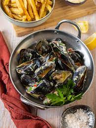

Moules Frites

Description
Ingredients
- Mussles - 1 kg
- White wine
- Shallotts
- Thyme
- Cream
- Garlic
- Butter
- Olive oil
Steps
- Fry shallots in butter
- Pour wine over shallots
- Add mussels (you have of course already washed them)
- Make french fries (get a deep fryer and figure it out, it's really not that complicated even though
every guy and his mother has an opinion on how it's properly made).
- Check out the recipe for aioli and enjoy.
Back to main page